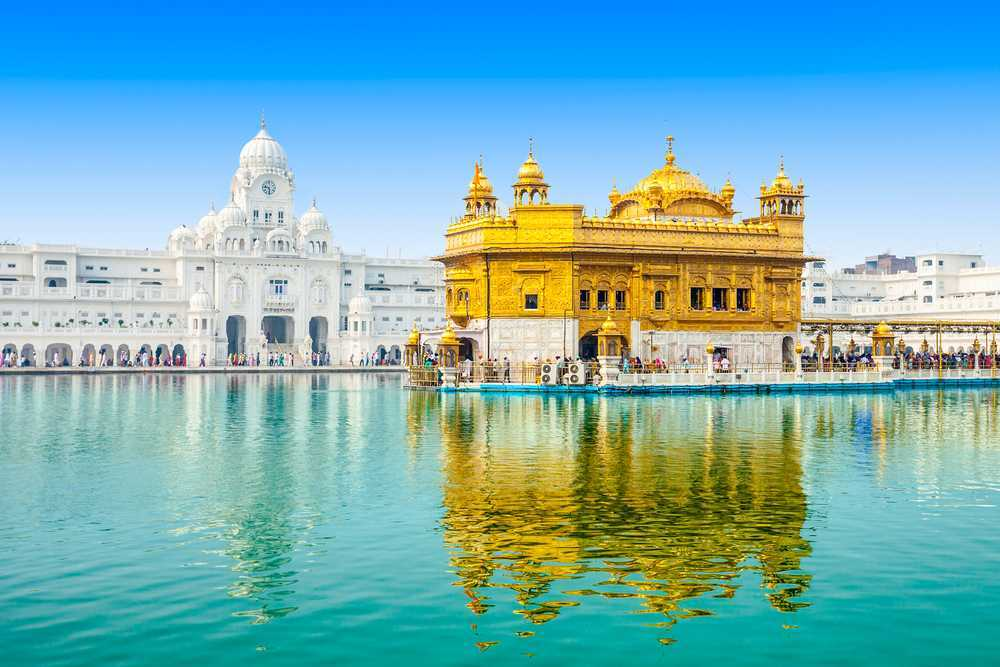
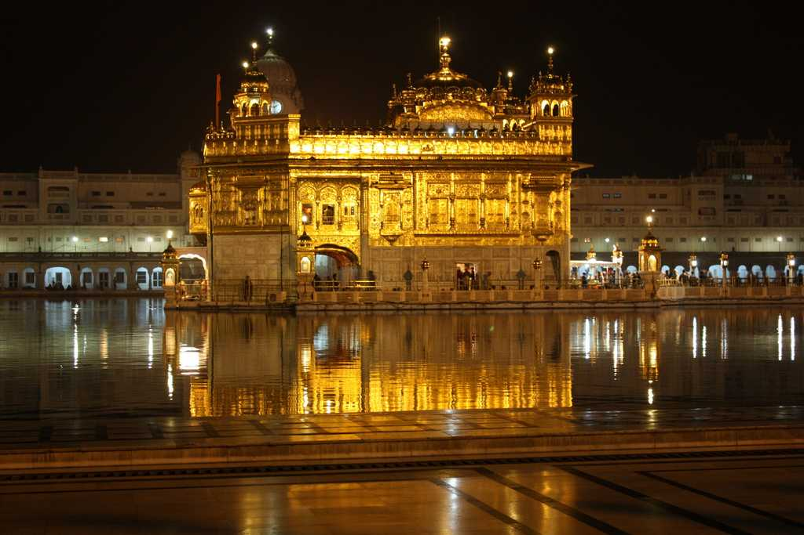
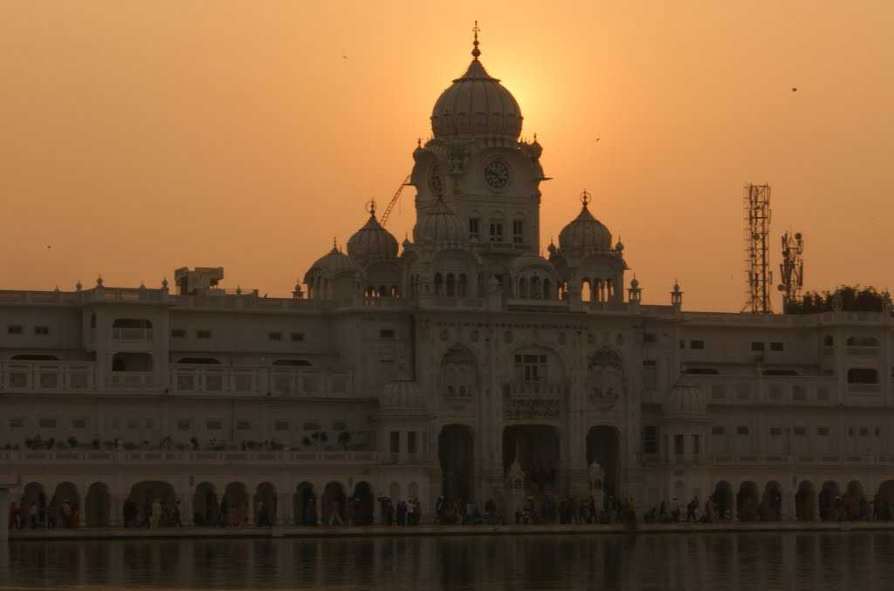
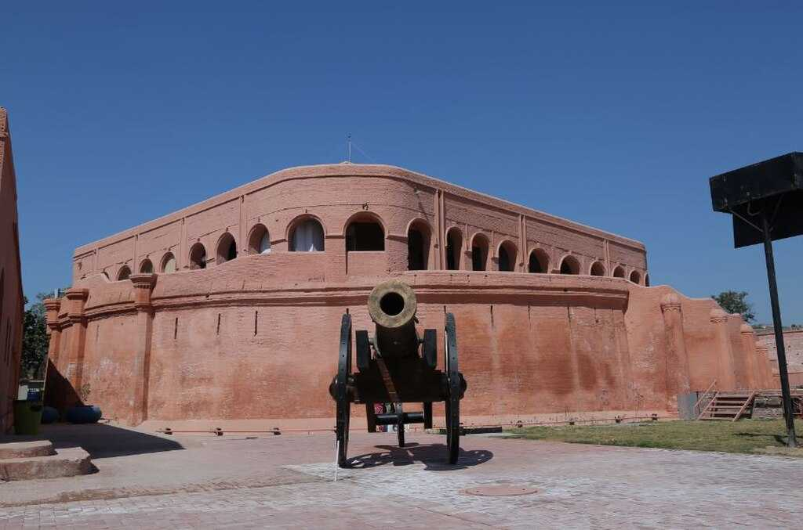
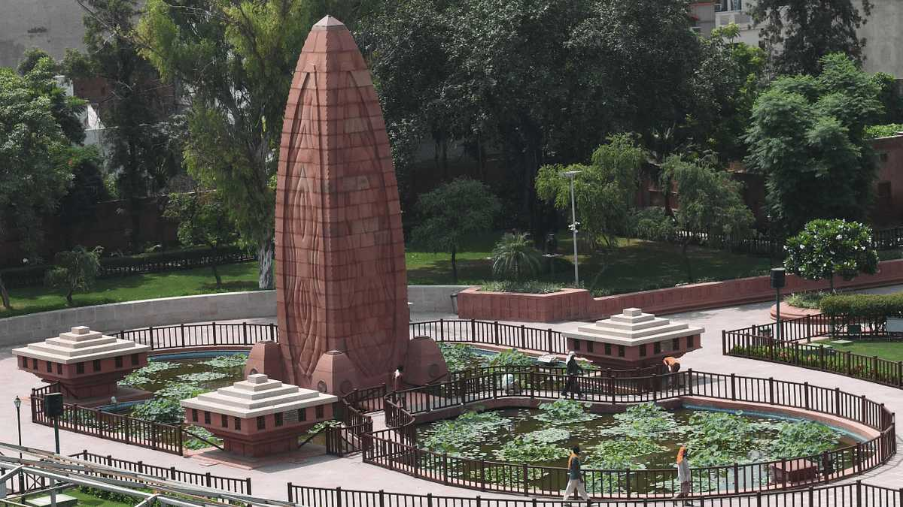
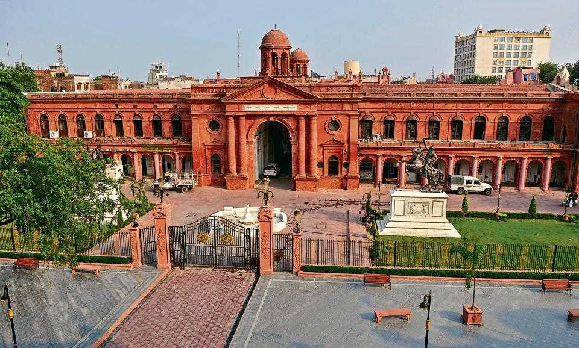
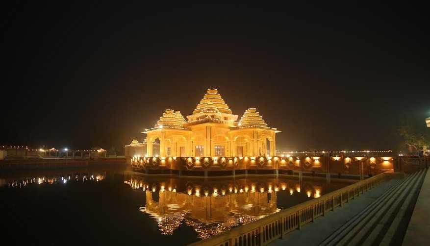
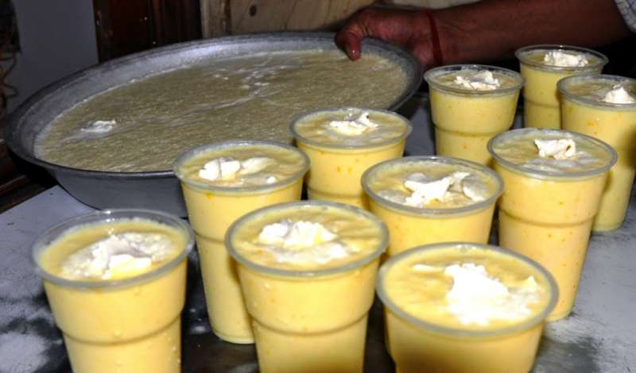
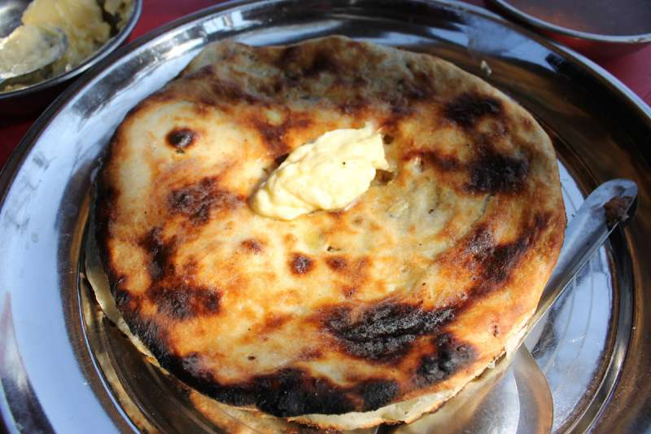
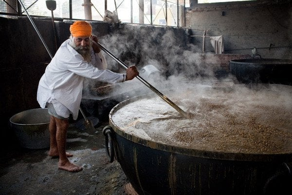

Contact Info Center
India’s Tourism, MI Road Delhi
📞 +91 141 2822863
📧 info@indiatourism.gov.in
🕘 Mon–Sat, 9:00AM–6:00PM
Amritsar, founded in 1577 by Guru Ram Das, the fourth Sikh Guru, is a city deeply rooted in faith, culture, and resilience. It is best known for the Golden Temple (Sri Harmandir Sahib), a magnificent spiritual site built in the 16th century, symbolizing universal brotherhood and equality. The temple’s gold-plated architecture and serene Amrit Sarovar (holy tank) offer peace to all who visit, regardless of religion or background. The city’s name itself is derived from this sacred pool—"Amrit Sarovar", meaning “pool of nectar.” Historically, Amritsar has witnessed pivotal events in India's past, including the Jallianwala Bagh massacre in 1919, a turning point in the freedom movement. The city also lies near the Wagah Border, where the daily Beating Retreat ceremony reflects both pride and patriotism. Today, Amritsar is not just a pilgrimage destination but also a cultural hub, known for its bustling old bazaars, rich Punjabi cuisine like Amritsari kulcha and lassi, and warm hospitality.







Amritsar is not only famous for the Golden Temple but also holds great historical and cultural importance as the center of Sikh heritage and resilience. One remarkable fact is that the city houses the historic Jallianwala Bagh, where on April 13, 1919, British troops opened fire on thousands of unarmed Indian civilians gathered for a peaceful protest. This tragic event became a turning point in India’s struggle for independence and is memorialized today with a museum and eternal flame inside the garden. The bullet marks on the walls and the preserved well where people jumped to escape the firing serve as powerful reminders of the sacrifices made for freedom.
Holiest shrine of Sikhism, known for its gold-plated structure, peaceful Sarovar, and the world’s largest free community kitchen.
Amritsar city center
October to March
Historic 18th-century fort once controlled by Maharaja Ranjit Singh; now a cultural complex with museums, light & sound shows, and traditional performances.
Old Cantt Road, Amritsar
October to February
A modest yet sacred site where Guru Ram Das and Guru Arjan Dev lived. Known for its historical value and peaceful atmosphere.
Near Golden Temple, inside Guru Bazaar
October to March
India’s first museum dedicated to the Partition of 1947, showcasing personal stories, documents, and exhibits on one of the most impactful events in Indian history.
Town Hall, near Golden Temple
Year-round, but October to March is most comfortable for walking tours in the area.

Spending a day in Amritsar, you cannot imagine going without at least one glass of lassi.

Amritsar is synonymous with Kulchas, the maida bread baked in a tandoor.

Langar Ka Prasad also known as Kara Prasad in Golden Temple is very famous in Panjab
India’s Tourism, MI Road Delhi
📞 +91 141 2822863
📧 info@indiatourism.gov.in
🕘 Mon–Sat, 9:00AM–6:00PM